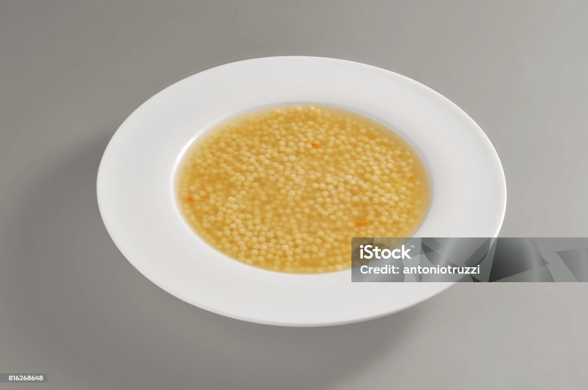

Pastina

This classic Italian pastina soup has all the flavors you'd expect from homemade chicken soup.
Over the years this has continued to be a staple in our houshold. From cold rainy days to fighting off a cold we've had this meal time and time again.
Ingredients
- 1 (3 to 4 lb) whole chicken
- 10 to 12 cups water
- 3 stalks of celery, divided
- 3 large carrots, peeled, divided
- 1 tablespoon kosher salt
- 2 teaspoons ground black pepper
- 2 tablespoons olive oil
- 2 cloves of garlic, minced
- 1 tablespoon chicken stock
- 1 cup pastina
- 1 tablespoon chopped parsley
- 2 tablespoons parmesan cheese, grated
Directions
- Place chicken in a large pot and pour water over to cover.
- Roughly chop 2 stalks of celery, 1 1/2 onions, and 2 carrots and add to pot with chicken. Season with 2 teaspoon salt and 1 teaspoon pepper and bring pot to a boil over high heat. Reduce the heat to medium-low and allow the chicken to simmer 1 hour, covered.
- Remove chicken from the pot and allow to cool before removing and shredding the meat. Strain the stock and discard the solids. Reserve liquid and add water if necessary to measure 12 cups of liquid. Wipe pot clean.
- Finely chop remaining celery, onion and carrot. Place pot over medium-high heat and add oil. Add chopped vegetables, remaining salt, pepper and garlic and cook frequently until vegetables are tender and onion is translucent (the veggies should not be browned). Add reserved stock and chicken base and stir to combine. Bring mixture to a boil and
reduce it to simmer. Allow soup to simmer 10 minutes.
- Increase heat to high and bring to a boil. Add pasta and cook, stirring occasionally 15 minutes or until pasta is tender. Reduce heat to low and add chicken and season if desired. Cook 5 additional minutes. Stir in chopped parsley and serve with grated Parmesan cheese.